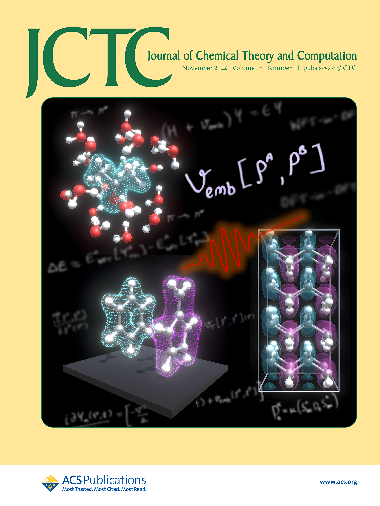
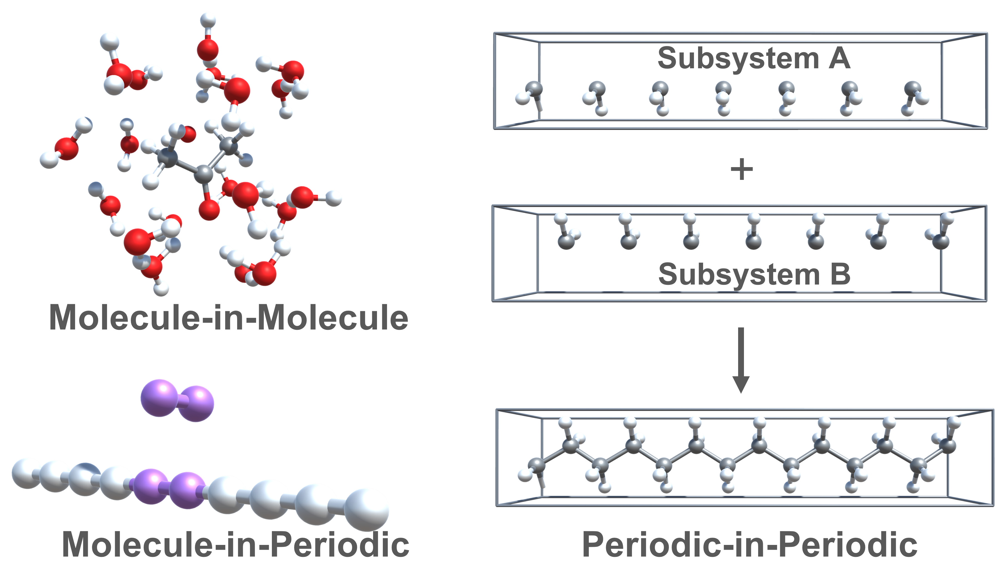
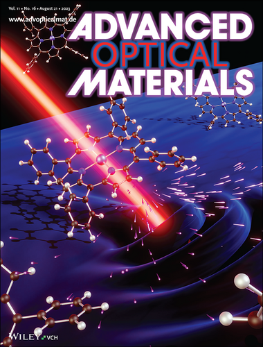
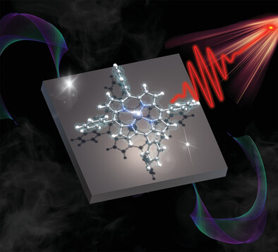
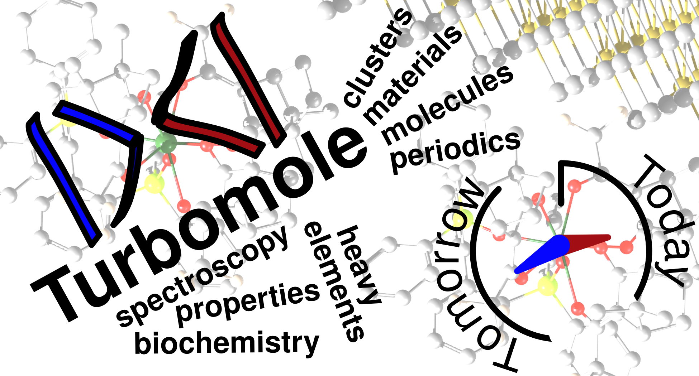
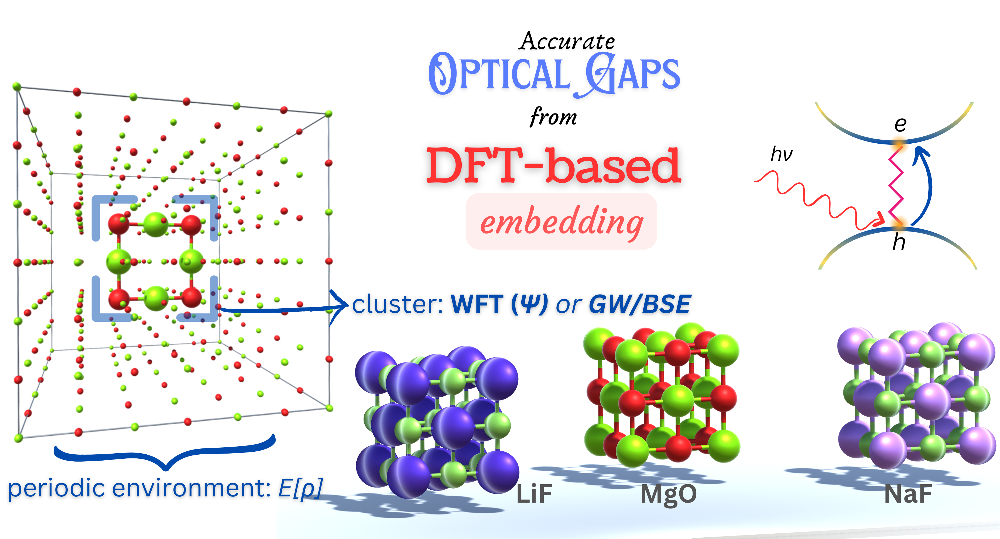
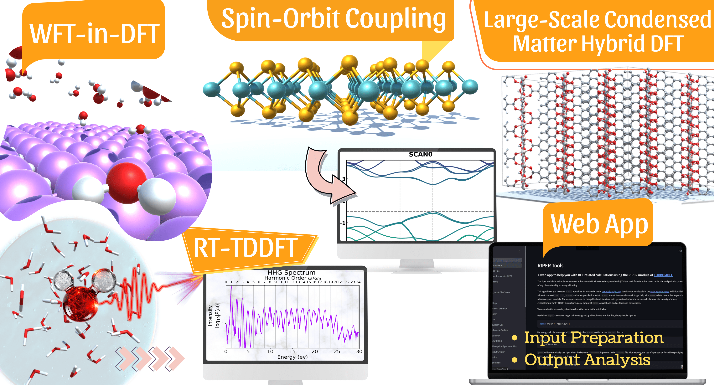
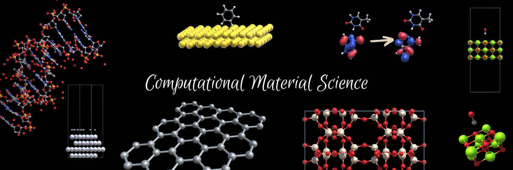

Direct Nanoscale Mapping of Band Alignment in Single-Layer Semiconducting Lateral Heterojunctions
Nano Lett., ASAP Article (2026). Published online April 13, 2026.
Journal articles
Peer-reviewed work across 2D materials, density functional theory, embedding methods, high-harmonic generation, crystallographic tools, and quantum chemistry software.
Metrics
Publication and citation metrics from Google Scholar as of May 13, 2026.
Complete list
Titles link to publisher or DOI pages wherever available.
Nano Lett., ASAP Article (2026). Published online April 13, 2026.
Adv. Mater., e14405 (2026). † contributed equally.
J. Phys. Chem. A 129, 39, 9062-9083 (2025). Highly Viewed ACS article.
J. Chem. Theo. Comput. 20, 21, 9592-9605 (2024).
J. Chem. Theo. Comput. 19, 20, 6859-6890 (2023). Highly Cited article.
Adv. Optical Mater. 2203070 (2023). Front cover and Top Viewed recognition.
J. Chem. Theo. Comput. 18, 11, 6892-6904 (2022). Supplementary cover and most-viewed article recognition.
J. Comput. Chem. 41, 2573-2582 (2020).
J. Appl. Cryst. 52, 1449-1454 (2019). Cover feature and top-downloaded article.
Phys. Rev. B 100, 045151 (2019).
AIP Conf. Proc. 2142, 110025 (2019).
Covers and TOCs
Cover artworks and table-of-contents graphics associated with selected publications.

Cover artwork for the periodic embedding implementation paper.

Graphical abstract for frozen-density and projection-based embedding.

Cover feature connected to HHG simulations and graphical design.

Graphical abstract for Brunel harmonic generation in thin-film organic semiconductors.

Visual summary for the broad TURBOMOLE methods review.

TOC graphic for GW/BSE-in-DFT and CC2-in-DFT optical gaps of ionic materials.

Visual for the 2025 DFT review across molecular and periodic systems.

Banner artwork for atomistic modeling and simulation workflows.